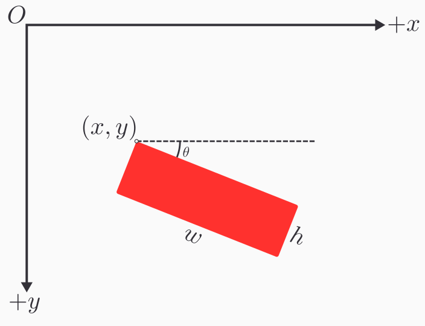
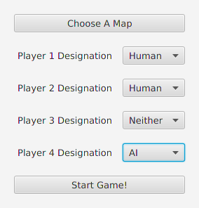

Because our game is an interactive program that updates in real time, we will need a sort of abstraction that handles updating the game in real time while also receiving user input. It achieve this goal we will introduce the idea of a game loop. At a high level a game loop will involve the following steps
where the "game state" is any sort of abstract representation of the game in the moment. The game state could for example involve the positions and velocities of the players and ball.
When the game responds to user input, it could for example update the velocities of the players. During the update phase, the game could then move all the players and ball in the direction of their velocity or update them in accordance with physical laws. Finally, with the updated state, the game is rendered to the screen, and the process starts over. This overview forms the basis of an interactive video game.
With the game loop covered at a high level, we will make an interface called GameScene that captures each stage of the game loop so that it can inevitably be driven by a sort of looping construction. In the GameScene, there will be methods that handle keyboard events as follow
/**
* The method called when it is detected that a key on the keyboard
* has been depressed
* @param e a description of the keystroke that occurred
*/
void onKeyPressed(KeyEvent e);
/**
* The method called when it is detected that a key on the keyboard
* has been released
* @param e a description of the keystroke that occurred
*/
void onKeyReleased(KeyEvent e);
The KeyEvent object is from javafx.scene.input.KeyEvent, and it is no coincidence that the method signatures matches that of JavaFX's key event listeners. Whenever JavaFX detects a key press, we will pass that key event to these methods for the game scenes implementing GameScene to handle. Implementing these methods allow for custom game logic to execute in response to keyboard events.
Next, any game scene implementing GameScene needs to specify how the game state should be updated. Thus we will include the following method in the interface
/**
* The method called to progress the game state
* @param currentTime the time in nanoseconds relative to an arbitrary
* start time.
*/
void updateState(long currentTime);
This method will be called by the game loop to advance the game state which typically involves updating the position of game objects. We need to to pass in a currentTime: long to decouple the game updates from the computer hardware's power. Consider two computers with two different CPUs. On the faster CPU the game loop will execute at a higher frequency than the slower computer which means the faster CPU will update the game more often. If implemented without care, the game may run at a higher speed on the faster computer giving an inconsistent experience across different hardwares. To remedy this issue, every time the game is updated, the time in nanoseconds must be supplied so that the game can determine the proper way to update the state so that the game state is tied to time that has passed and not hardware power. Thus even if one were to play the game on different computers, the experience will feel relatively similar as one's experience with time does not often change.
Finally the GameScene needs a way to render the scene which means the following method must implemented
/**
* The method called to render the game scene to a canvas
* @param canvas the canvas to draw the scene on
*/
void render(Canvas canvas);
The Canvas object is from javafx.scene.canvas.Canvas and any sort of custom render code for the GameScene should perform all draw operations on this Canvas.
Finally, as a convenience method GameScene should have a default method called generateRenderableComponent(int, int) -> Canvas. This method essentially creates a Canvas object for us and configures it to handle keyboard inputs. It will take two integers which parametrizes the returned Canvas's width and height, respectively. A Canvas will first be created and its key pressed handler will be attached to the onKeyPressed method in GameScene. Similarly, the key released handler will be attached to the onKeyReleased method in GameScene. Thus all keyboard events on the Canvas will be dispatched to class implementing GameScene. However in the current state, the Canvas will not accept keyboard inputs as it is not "focused." The Canvas can received keyboard inputs by notifying JavaFX that the Canvas can be "focused" on. Then we just request the focus be on the Canvas and return the Canvas object. In code the method would resemble
/**
* Creates a Canvas object configured to be compatible with the GameScene
* interface
* @param width the Canvas's width in pixels
* @param height the Canvas's height in pixels
*/
default Canvas generateRenderableComponent(int width, int height) {
Canvas canvas = new Canvas(width, height);
canvas.setOnKeyPressed(this::onKeyPressed);
canvas.setOnKeyReleased(this::onKeyReleased);
canvas.setFocusTraversable(true);
canvas.requestFocus(true);
return canvas;
}
Finally, GameScene should extend Serializable. We will impose this constraint so that later in the development of the game, we have the capability of saving game scenes on the drive and even transmit game scenes over the network.
In whole the interface should look as such
public interface GameScene extends Serializable {
void updateState(long currentTime);
void onKeyPressed(KeyEvent e);
void onKeyReleased(KeyEvent e);
void render(Canvas canvas);
default Canvas generateRenderableComponent(int width, int height) {
Canvas canvas = new Canvas(width, height);
canvas.setOnKeyPressed(this::onKeyPressed);
canvas.setOnKeyReleased(this::onKeyReleased);
canvas.setFocusTraversable(true);
canvas.requestFocus();
return canvas;
}
}
The GameScene sets the foundation for the different phases a game goes through. We now need to drive it with a looping construct. Rather than use a naive while loop, we will make use of the AnimationTimer in JavaFX so as to not lock up the main thread of our program with the game loop. We will make a class called GameLoop which extends AnimationTimer. In order to extend AnimationTimer the class must override the handle method which is called every time the AnimationTimer "ticks" which occurs at a fairly high frequency. First, however, the class GameLoop has two fields: a gameScene: GameScene and a canvas: Canvas. The GameScene informs the GameLoop what scene it needs to drive, and the Canvas informs the GameLoop where the rendering should take place. The canonical constructor should be used to fill these fields. As for the handle from AnimationTimer, we simply need to call updateState and then render on gameScene every time the AnimationTimer pulses/ticks. In code the handle function would resemble
public class GameLoop extends AnimationTimer {
private GameScene gameScene;
private Canvas canvas;
// --snip--
/**
* The method called periodically by AnimationTimer
* @param now the time in nanoseconds
*/
public void handle(long now) {
gameScene.updateState(now);
gameScene.render(canvas);
}
}
Now, whenever we would like to render a GameScene, we simply instantiate an instance of some GameScene, create a Canvas from it using generateRenderableComponent, pass both objects into the GameLoop, and run the start method on the AnimationTimer which GameLoop inherits.
The work up to this point is represented diagrammatically below.
To make computation easier we will develop a helper class called Vec2d. This class represents 2 dimensional vectors and has methods that can execute common vector operations. In this class there are 2 fields, both of which are doubles: x and y. For brevity assume that the canonical constructor is used and setters and getters for x and y are implemented. Mathematically, an instance of Vec2d will encode the vector $\left\langle x, y \right\rangle$. This class should also implement Serializable.
First, we will define a method scale which takes a double c and returns a new vector that is a scaled version of the current vector. To do this, we simply multiply each component of the vector by c.
/**
* Scales a vector by a constant multiple
* @param c the constant multiple
* @return a scaled vector
*/
public Vec2d scale(double c) {
return new Vec2d(x*c, y*c);
}
We will also define a method add which adds two vectors and returns the result. It takes a Vec2d called other, and adds this with other, component-wise.
/**
* Adds the current vector the another vector
* @param other the vector to add with
* @return the vector sum
*/
public Vec2d add(Vec2d other) {
return new Vec2d(
this.x + other.x, this.y + other.y
);
}
Similarly subtraction is defined but the method is called sub and the components are subtracted as opposed to added.
/**
* Computes the difference between the current vector with another vector
* @param other the vector to subtract with
* @return the vector difference
*/
public Vec2d sub(Vec2d other) {
return new Vec2d(
this.x - other.x, this.y - other.y
);
}
It will also be convenient to compute dot products, so we will also create a method dot that takes a Vec2d called other and returns a double. Given two vectors $\left\langle x, y \right\rangle$ and $\left\langle x', y' \right\rangle$ the dot product is $x \cdot x' + y \cdot y'$.
/**
* Computes the dot product between the current vector and another vector
* @param other the other vector
* @return the dot product
*/
public double dot(Vec2d other) {
return this.x * other.x + this.y * other.y;
}
The method mag should simply return a double representing the magnitude or length of the current vector. From linear algebra the magnitude of vector $\mathbf{v}$ is $\sqrt{\mathbf{v} \cdot \mathbf{v}}$ which conveniently can be implementing using dot.
/**
* Computes the length of the current vector
* @return the length of the vector
*/
public double mag() {
return Math.sqrt(this.dot(this));
}
We will also implement a method projectOnto which takes another Vec2d and returns a Vec2d representing the projection. Thus a.projectOnto(b) in mathematical notation would be $\text{proj}_\mathbf{b}\mathbf{a}$. Using linear algebra, this can be computed with
$$ \text{proj}_{\mathbf{b}}\mathbf{a} = \left(\mathbf{a} \cdot \frac{\mathbf{b}}{\lVert \mathbf{b} \rVert}\right) \mathbf{b} $$
/**
* Computes the projection of the current vector onto another vector
* @param other the vector to project onto
* @return the projection vector
*/
public Vec2d projectOnto(Vec2d other) {
Vec2d unit = other.normalize();
return unit.scale(unit.dot(this));
}
Finally, the last method to be implemented is rotate which takes a double called angle in radians. It returns a Vec2d that is the rotation of the current vector, rotated about the origin by angle. This action can be done using a rotation matrix
$$
\begin{bmatrix}
\cos \theta & -\sin \theta \\
\sin \theta & \cos \theta
\end{bmatrix}
\begin{bmatrix} x \\ y \end{bmatrix}
\ = \
\begin{bmatrix}
x\cos\theta-y\sin\theta \\
x\sin\theta+y\cos\theta
\end{bmatrix}.
$$
For more information see https://en.wikipedia.org/wiki/Rotation_matrix which is where the above formula came from.
/**
* Rotates the current vector about the origin
* @param angle the angle to rotate by in radians
* @return a rotated vector
*/
public Vec2d rotate(double angle) {
double c = Math.cos(angle);
double s = Math.sin(angle);
return new Vec2d(x*c - y*s, x*s + y*c);
}
Now with two dimensional vectors implemented, we will use mathematical notation for vectors when convenient with the understanding that they can easily converted into an instance of Vec2d.
To detect collisions between different types of shapes, we will make an interface Collider with the following form.
public interface Collider extends Serializable {
/**
* Determines whether two Colliders intersect each other
* @param other the other collider with which to check for an
* intersection
* @return a boolean that determines if the current Collider intersects
* with other
*/
boolean collide(Collider other);
/**
* Gets the position of the Collider
* @return the position of the Collider
*/
Vec2d getPosition();
/**
* Sets the position of the Collider
* @param position the new location of the Collider
*/
void setPosition(Vec2d position);
}
The interface should extend Serialiable so that it can be converted into bytes for storage and transmission.
Notice that we are making use of Vec2d to describe a physical property like position. In any event, the method of particular interest is collide which every class implementing Collider must create. This method is used to check collision between two Collider objects.
The first Collider we will create will be a RectangleCollider. A RectangleCollider is defined by the position of its top-left corner which we will call the origin: Vec2d. The collider is also defined by the following doubles: width, height, and angle. Note that angle should be in radians and it describes how much the rectangle is rotated about its origin. See the figure below for an illustration. In the image $(x, y)$ is origin and $\theta$ is angle.

The canonical construction should be made, and setters and getters for the attributes should be made. For setPosition and getPosition from Collider, the origin should be taken as the RectangleCollider's position.
The RectangleCollider class should also have a helper method computeVerticesAndBasis which returns an array of Vec2ds. The returned array will be composed of 6 Vec2ds. The 4 vertices of the rectangle, starting at the origin and moving clockwise, will be the first 4 entries and the last 2 entries will be "basis" vectors of the rectangle. See the figure below to visualize the basis vectors which in essence form a local coordinate system on the rectangle relative to origin. The basis vectors in the figure are $\mathbf{b}_1$ and $\mathbf{b}_2$, and note that for convenience purposes these vector will have unit length.

We can easily compute the 6 values using basic linear algebra. Let
$$ \mathbf{u} = \left\langle \text{width}, 0 \right\rangle $$
and
$$
\mathbf{v} = \left\langle 0, \text{height} \right\rangle.
$$
As of now these two vectors form the axis-aligned version of the rectangle. To get the rotated version, we should rotate both of these vectors by angle using the rotate method in Vec2d. We will now denote the rotated version of $\mathbf{u}$ and $\mathbf{v}$ as $\mathbf{u}'$ and $\mathbf{v}'$ respectively. We can now form the array.
$$ \begin{bmatrix} \mathtt{origin} \\ \mathtt{origin} + \mathbf{u}' \\ \mathtt{origin} + \mathbf{u}' + \mathbf{v}' \\ \mathtt{origin} + \mathbf{v}' \\ \mathbf{u}'\mathtt{.normalize()} \\ \mathbf{v}'\mathtt{.normalize()} \\ \end{bmatrix} $$
The code would resemble
/**
* Computes the vertices of the rotated rectangle along and also returns
* the local coordinate space
* @return a list of vectors where the first 4 vectors are the vertices
* and the last two are the basis vectors of the local coordinate space
*/
public Vec2d[] computeVerticesAndBasis() {
Vec2d b1 = new Vec2d(width, 0).rotate(angle);
Vec2d b2 = new Vec2d(0, height).rotate(angle);
Vec2d sum = b1.add(b2);
return new Vec2d[] {
origin,
origin.add(b1),
origin.add(sum),
origin.add(b2),
b1.normalize(),
b2.normalize()
};
}
Before we implement collide from Collider for RectangleCollider, we should introduce another collider: CircleCollider. A CircleCollider is parameterized by the following fields: center: Vec2d and radius: double. Both of these fields should have setters and getters, and the canonical constructor should be used to populate these fields. Furthermore getPosition and setPosition from Collider should access and mutate center as the position.
We now introduce the collision detection for RectangleCollider. The collide method from the Collider interface has as parameter an other object of type Collider. Thus it is sensible to break up the collision detection depending on the type Collider of collider passed.
For the first case, assuming that other is a RectangleCollider, we will assert that a collision has occurred iff the vertex of one RectangleCollider lies within the boundaries of the other. Therefore, let thisVerticesAndBasis = this.computeVerticesAndBasis() and otherVerticesAndBasis = other.computeVerticesAndBasis(). We need to check if other's vertices lie in this's region. For each vertex v in otherVerticesAndBasis[0:4], compute the displacement vector d: Vec2d of v relative to this.origin. That is
$$ \mathbf{d} = \mathbf{v} - \mathtt{this.origin} $$
We now express d in terms of this's basis vectors which amounts to finding constants $c_1$ and $c_2$ such that
$$
\mathbf{d} = c_1 \mathbf{b}_1 + c_2 \mathbf{b}_2
$$
where the $\mathbf{b}_i$'s are this's basis vectors. From linear algebra it turns out that $c_i = \mathbf{d} \cdot \mathbf{b}_i$. This is due to the fact that the $\mathbf{b}_i$'s form what is known as an "orthonormal basis". In any event, if
$$
0 \leq c_1 \leq \mathtt{this.width}
$$
and
$$ 0 \leq c_2 \leq \mathtt{this.height} $$
then v is in the bound of this's region and we can return true. We now do the same analysis but interchange the roles of this and other to check whether this's vertices lie within other's bound. The analysis is omitted and the code below should clear any confusion.
public boolean collide(Collider other) {
if (other instanceof RectangleCollider) {
RectangleCollider otherRect = (RectangleCollider) other;
Vec2d[] thisVerticesAndBasis = this
.computeVerticesAndBasis();
Vec2d[] otherVerticesAndBasis = otherRect
.computeVerticesAndBasis();
// Check if other's vertices are inside this's rectangular region
for (int i = 0; i < 4; i++) {
Vec2d vertex = otherVerticesAndBasis[i];
Vec2d displacement = vertex.sub(thisVerticesAndBasis[0]);
// Decompose displacement in terms of this's
// local coordinate space
// displacement = c1*this.b1 + c2*this.b2
double c1 = thisVerticesAndBasis[4].dot(displacement);
double c2 = thisVerticesAndBasis[5].dot(displacement);
// vertex is in this's region iff
// 0 <= c1 <= this.width and
// 0 <= c2 <= this.height
if (
0 <= c1 && c1 <= this.width &&
0 <= c2 && c2 <= this.height
) {
return true;
}
}
// Check if this's vertices are inside other's rectangular region
for (int i = 0; i < 4; i++) {
Vec2d vertex = thisVerticesAndBasis[i];
Vec2d displacement = vertex.sub(otherVerticesAndBasis[0]);
// Decompose displacement in terms of other's
// local coordinate space
// displacement = c1*other.b1 + c2*other.b2
double c1 = otherVerticesAndBasis[4].dot(displacement);
double c2 = otherVerticesAndBasis[5].dot(displacement);
// vertex is in this's region iff
// 0 <= c1 <= other.width and
// 0 <= c2 <= other.height
if (
0 <= c1 && c1 <= otherRect.width &&
0 <= c2 && c2 <= otherRect.height
) {
return true;
}
}
} else if (other instanceof CircleCollider) {
// --snip--
}
return false;
}
We have handled rectangle on rectangle collisions. We shall now focus our attention on rectangle on circle collisions. While still in RectangleCollider, we handle the case in which other: Collider is now in fact a CircleCollider.
 .
.
Before discussing rectangle on circle collisions, it is helpful to understand how one can find the closest point on the rectangle to some point whose displacement from the rectangle's origin is $\mathbf{v}$. See the diagram above. As the diagram suggests, we can find the closest point by representing $\mathbf{v}$ in terms of the basis vectors similar to what we did for rectangle on rectangle collisions. Using the same technique as before we can find constants $c_1$ and $c_2$ such that
$$ \mathbf{v} = c_1 \mathbf{b}_1 + c_2 \mathbf{b}_2 $$
A point is in the rectangle iff its displacement vector has $c_1 \in [0, w]$ and $c_2 \in [0, h]$, assuming we are following the notation laid out in the diagram. Therefore we can compute the closest point by finding the closest value in $[0, w]$ to $c_1$ and the closest value in $[0, h]$ to $c_2$. Therefore to find the closest point let $c_1' = \max(0, \min(c_1, w))$ and $c_2' = \max(0, \min(c_2, h))$. The closest point will thus be
$$ \text{closest point} = \mathtt{origin} + c_1' \mathbf{b}_1 + c_2' \mathbf{b}_2 $$
The theory outlined above is realized in the code below. The method findClosestPoint takes a point: Vec2d and returns a Vec2d which is the point on the rectangle closest to point.
/**
* Finds the closest point on the rectangle to a given point
* @param point the point to find the closest point to
* @return the closest point to the given point
*/
public Vec2d findClosestPoint(Vec2d point) {
Vec2d[] thisVerticesAndBasis = this.computeVerticesAndBasis();
Vec2d basis1 = thisVerticesAndBasis[4];
Vec2d basis2 = thisVerticesAndBasis[5];
Vec2d displacement = point.sub(thisVerticesAndBasis[0]);
// Decompose displacement in terms of basis1 and basis2
// displacement = c1*basis1 + c2*basis2
double c1 = basis1.dot(displacement);
double c2 = basis2.dot(displacement);
// Clamp c1 to [0, width] and clamp c2 to [0, height]
c1 = Math.max(0, c1);
c2 = Math.max(0, c2);
c1 = Math.min(width, c1);
c2 = Math.min(height, c2);
return basis1.scale(c1).add(basis2.scale(c2)).add(thisVerticesAndBasis[0]);
}
Now that we have a way of finding the closest point, to determine rectangle on circle collision, we simply have to find the closest point on the rectangle to the circle and check if the distance from the circle's center to the closest point is less than or equal to the circle's radius. Diagrammatically the figure below argues the reasoning for this collision check.

In code the collision check would be as follow
public boolean collide(Collider other) {
if (other instanceof RectangleCollider) {
// --snip--
} else if (other instanceof CircleCollider) {
CircleCollider otherCircle = (CircleCollider) other;
Vec2d closestPoint = findClosestPoint(otherCircle.getCenter());
return
closestPoint.sub(otherCircle.getCenter()).mag()
<=
otherCircle.getRadius();
}
return false;
}
With the RectangleCollider's implementation finished, the CircleCollider should also be finished. Like in the RectangleCollider, the collide method takes an other: Collider object and we should execute different logic depending on the type of Collider other is. If other is a CircleCollider, determining a collision is straightforward. Simply compute the distance between the two centers. If that distance is less than or equal to the sum of the radii, then a collision occurred. See the figure below to visualize this argument.

If, however, other is a RectangleCollider then simply call other.collide(this) as circle on rectangle collisions are the same as rectangle on circle collisions.
In code collide for the CircleCollider would be
public boolean collide(Collider other) {
if (other instanceof CircleCollider) {
CircleCollider otherCircle = (CircleCollider) other;
double distance = otherCircle.center.sub(this.center).mag();
return distance <= this.radius + otherCircle.radius;
} else if (other instanceof RectangleCollider) {
RectangleCollider otherRect = (RectangleCollider) other;
return otherRect.collide(this);
}
return false;
}
The diagram below shows the components of the physics engine.

Up to this point, we can implement the key objects in the game pong. There are obstacles, players, and a ball. Unifying all these objects are that they are game objects present in the game which we will describe as an "entity".
To unify all game objects under the same framework, we will create an abstract Entity class. This class will have the following protected fields that children can inherit: id: String, position: Vec2d, velocity: Vec2d, and colliders: ArrayList<Collider>. These fields will characterize an Entity and provide enough information for the dynamics of an entity. Setters and getters for all these fields should be made.
Subclasses of Entity should have some way to be rendered to the screen. Thus Entity will have an abstract method render which takes a Canvas object.
/**
* Renders the entity to a canvas
* @param canvas the canvas to render the entity on
*/
public abstract void render(Canvas canvas);
Furthermore, when an Entity collides with another Entity the entities should be alerted of this fact. Thus there needs to be an abstract onCollision method with two parameters: other: Entity and otherCollider: Collider. The first parameter is the Entity that collided with the current Entity. The second parameter is the Collider on the other Entity that triggered the collision event.
/**
* The method invoked when this entity has collided with another entity
* @param other the entity that this entity collided with
* @param otherCollider the collider on the other entity that detected
* the collision
*/
public abstract void onCollision(Entity other, Collider otherCollider);
Every Entity has associated with it a list of Colliders in the colliders field. Thus it would be helpful to have a method collidesWith that takes another Entity called other and returns null if the two entities did not collide but returns two Colliders if a collision did take place where the two Colliders are the colliders that caused a collision. Checking for a collision between two entities is straightforward. We simply check every pair of Colliders in both entities and run the collide method to check if the pair collides.
/**
* Checks if this entity collides with another entity
* @param other the entity to check collision with
* @return return either null or 2 colliders. Null is returned if there is
* no collision, but if there is a collision the first collider will be
* the collider in this entity and the second collider will be the
* collider in the other entity.
*/
public Collider[] collidesWith(Entity other) {
for (Collider thisCollider : this.colliders) {
for (Collider otherCollider : other.colliders) {
if (thisCollider.collide(otherCollider)) {
return new Collider[]{thisCollider, otherCollider};
}
}
}
return null;
}
Finally, Entity should implement Serializable so that they can be saved to disk or transmitted over a network.
An Obstacle class extending the Entity class will essentially be the Entity form of composite Colliders. The idea is that we would like to combine Colliders into one shape which can be deemed as an Entity for the game engine to actuate.
Obstacles should have a color assigned. The color will be representing using RGB in colorRgb: int[]. We should also have the ability to choose whether the Obstacle is visible which will be in a field isVisible: boolean. Invisible Obstacle's allow for trigger zones where some action can trigger if some collision occurs. For example when the ball leaves the screen we could put trigger zones outside the field to reset the game. With this in mind, the last field in an Obstacle should be a trigger: CollisionEventHandler where CollisionEventHandler is an interface whose only method requires that the Entity and its Collider that cause the collision event to occur be passed. Additionally, it should extend Serializable.
public interface CollisionEventHandler extends Serializable {
void handleCollision(Entity other, Collider otherCollider);
}
Whenever a developer creates an Obstacle, a CollisionEventHandler can be passed to allow for customizable game logic.
Setters and getters for all the fields should be made. However, special care is taken for the constructor.
public Obstacle(
String name,
Collider[] hitZones,
int[] colorRgb,
boolean isVisible,
CollisionEventHandler trigger
) {
this.id = name;
this.position = new Vec2d(0, 0);
this.velocity = new Vec2d(0, 0);
this.colliders = new ArrayList<>();
colliders.addAll(Arrays.asList(hitZones));
this.colorRgb = colorRgb;
this.isVisible = isVisible;
this.trigger = trigger;
}
Recall that Obstacle extends Entity so the fields of Entity should be populated. The code displayed above is self-explanatory, but attention should be focused on the fact that the position is initialized to (0, 0). This position was arbitrarily chosen as it is not clear what should be the position if the Obstacle is composed of multiple "zones".
We should also override the setPosition method in Entity as setting the position field alone does not actually move the Obstacle. The reason is that the Colliders need to move whenever the position is changed. Because the position was arbitrarily chosen to be (0, 0), we need to understand what it means to update an Obstacle's position. Ideally we would want the colliders forming the Obstacle to maintain their positions relative to each other. Therefore whenever setPosition is called on the Obstacle, we need to compute a displacement that represents how much we need to move each Collider to give the illusion of the Obstacle having its position changed. The displacement is simply the difference between the given position passed to setPosition and the Obstacle's current position. With this displacement we just change the position of each Collider in colliders by this displacement.
@Override
public void setPosition(Vec2d position) {
Vec2d displacement = position.sub(this.position);
super.setPosition(position);
for (Collider collider : this.colliders) {
collider.setPosition(
collider.getPosition().add(displacement)
);
}
}
Entity also has an abstract render method which means we must define how to render an Obstacle. This is mechanically straightforward to do. We simply iterate through colliders and draw a rectangle if the Collider is a RectangleCollider and draw a circle if the Collider is a CircleCollider. The particularities of JavaFX drawing are explored in the code below. Note that if isVisible is false, then no rendering should take place.
From this point on, we will impose that all spatial quantities in Entity assume that the coordinate system of the screen space is based on the unit square. All temporal units are assumed to be seconds.
The unit square screen space means the top left corner is (0, 0), the top right corner is (1, 0), the bottom left corner is (0, 1), and the bottom right corner is (1, 1). This design choice was made to decouple the rendering from the peculiarities of different screen resolutions and different window sizes.
This unit square coordinate system is why during rendering quantities are multiplied by the Canvas's width and height for quantities relating to horizontal and vertical distances, respectively.
@Override
public void render(Canvas canvas) {
if (!isVisible) {
return;
}
GraphicsContext ctx = canvas.getGraphicsContext2D();
ctx.setFill(Color.rgb(colorRgb[0], colorRgb[1], colorRgb[2]));
for (Collider collider : this.colliders) {
if (collider instanceof RectangleCollider) {
RectangleCollider rectangle = (RectangleCollider) collider;
Vec2d[] verticesAndBasis = rectangle.computeVerticesAndBasis();
ctx.fillPolygon(
new double[]{
verticesAndBasis[0].getX() * canvas.getWidth(),
verticesAndBasis[1].getX() * canvas.getWidth(),
verticesAndBasis[2].getX() * canvas.getWidth(),
verticesAndBasis[3].getX() * canvas.getWidth(),
},
new double[]{
verticesAndBasis[0].getY() * canvas.getHeight(),
verticesAndBasis[1].getY() * canvas.getHeight(),
verticesAndBasis[2].getY() * canvas.getHeight(),
verticesAndBasis[3].getY() * canvas.getHeight(),
},
4
);
} else if (collider instanceof CircleCollider) {
CircleCollider circle = (CircleCollider) collider;
double centerX = circle.getCenter().getX();
double centerY = circle.getCenter().getY();
double r = circle.getRadius();
ctx.fillOval(
(centerX - r) * canvas.getWidth(),
(centerY - r) * canvas.getHeight(),
2*r * canvas.getWidth(),
2*r * canvas.getHeight()
);
}
}
}
Finally, Entity has onCollision as abstract. As stated before, whenever a collision with the Obstacle is detected, this method will be invoked. What to do during a collision event is up to the developer so will we will simply pass the parameters of onCollision to trigger.handleCollision as such
@Override
public void onCollision(Entity other, Collider otherCollider) {
if (trigger != null) {
trigger.handleCollision(other, otherCollider);
}
}
Note that a developer may choose to not pass a CollisionEventHandler. In which case, we simply do nothing when a collision occurs.
The player is a rectangular paddle. For the Player class which also extends Entity, it is sensible to have a RectangularCollider called collider as one of the fields. This Collider will also parameterize the player's width and height. We would also like the Player to have a property moveSpeed: double that dictates how fast the player moves. For example if moveSpeed = 0.3, then that implies that the player can move 30% of the screen in 1 second. We also should have a field direction: int which takes on the values {-1, 0, 1}. The value of direction determines if the Player is currently moving in the positive direction associate with it which we will call positiveDirection: Vec2d. Recall that Players may be on the top/bottom or left/right sides of the screen so the positive direction will be down and right, respectively. Next we need to consider the keys that move the player. The fields directionKeyPositive: int and directionKeyNegative: int should be in Player and are the key codes on the keyboard associated with positive and negative movement. Finally, there needs to be a field lastContactFreePosition: Vec2d which will be used to revert the Player back to a position that is hopefully collision free.
Setters and getters should be made only for moveSpeed and direction as the other fields are "internal fields" that should not be exposed to the outside world.
Making the constructor is slightly less straightforward as we need to take into account the fields of Entity. In any event, the code below is self-explanatory and merely fills in the fields mentioned above and the fields in Entity. It should be noted that we are assuming that Players created are initialized to in a collision free state. When creating the RectangleCollider for the Player, we also need to add this collider to colliders in Entity. Otherwise, the Player would effectively have no colliders in the eyes of the engine.
public Player(
String name,
Vec2d position,
double width,
double height,
Vec2d positiveDirection,
int directionKeyPositive,
int directionKeyNegative,
double moveSpeed
) {
// Fill in Entity attributes
this.id = name;
this.position = position;
this.velocity = new Vec2d(0, 0);
this.collider = new RectangleCollider(position, width, height, 0);
this.colliders = new ArrayList<>();
this.colliders.add(collider);
// Fill in Player fields
direction = 0;
this.positiveDirection = positiveDirection;
this.directionKeyPositive = directionKeyPositive;
this.directionKeyNegative = directionKeyNegative;
this.moveSpeed = moveSpeed;
lastContactFreePosition = position;
}
Just like the Obstacle class, we need to override the setPosition method in Entity so that the RectangleCollider in Player can "track" the Player as it has its position updated. First, whenever the position is updated, we will update lastContactFreePosition to be the current position before we update the position. Then we modify position to the position passed, and then we update the position of the RectangleCollider.
@Override
public void setPosition(Vec2d position) {
lastContactFreePosition = this.position;
super.setPosition(position);
// Update the collider's position
collider.setPosition(position);
}
The render method from Entity is not particularly interesting. We simply draw a rectangle wherever the player is.
@Override
public void render(Canvas canvas) {
GraphicsContext ctx = canvas.getGraphicsContext2D();
double canvasWidth = canvas.getWidth();
double canvasHeight = canvas.getHeight();
ctx.setFill(Color.RED);
ctx.fillRect(
collider.getOrigin().getX() * canvasWidth,
collider.getOrigin().getY() * canvasHeight,
collider.getWidth() * canvasWidth,
collider.getHeight() * canvasHeight
);
}
The onCollision method from Entity also is not very exciting. Essentially, if a collision is detected, we will revert the Player's position back to its last contact free location, making sure that lastContactFreeLocation truly is a location that is contact free. Recall that setPosition will update the lastContactFreeLocation, but if a collision occurred, we most certainly do not want to assert that lastContactFreeLocation is the location the Player is currently in which is causing a collision with another Entity.
@Override
public void onCollision(Entity other, Collider otherCollider) {
setPosition(lastContactFreePosition);
lastContactFreePosition = this.position;
}
As a convenience, we will make the following methods setDirectionKeyPress and setDirectionKeyRelease. Both of these methods take a keyCode: int and change the direction of the Player depending on the key pressed.
For setDirectionKeyPress, if the key code matches directionKeyPositive then we set the direction to +1. If the key code matches directionKeyNegative then we set the direction to -1.
/**
* Sets the direction of the player based on the key pressed
* @param keyCode the key pressed
*/
public void setDirectionKeyPress(int keyCode) {
if (keyCode == directionKeyPositive) {
setDirection(1);
} else if (keyCode == directionKeyNegative) {
setDirection(-1);
}
}
For setDirectionKeyRelease, if the key released matches the direction the Player is currently moving in, then we want to set the Player's direction to 0.
/**
* Sets the direction of the player based on the key released
* @param keyCode the key released
*/
public void setDirectionKeyRelease(int keyCode) {
// If the key released matches the direction being moved in, stay still
if (
(keyCode == directionKeyPositive && direction == 1) ||
(keyCode == directionKeyNegative && direction == -1)
) {
setDirection(0);
}
}
We are not quite finished yet. We need to modify the setDirection method. Such that whenever the direction is set, the Player's velocity is also altered. We simply just change velocity to $(\mathtt{direction} \cdot \mathtt{moveSpeed}) \cdot \mathtt{positiveDirection}$.
public void setDirection(int direction) {
this.direction = direction;
this.velocity = positiveDirection.scale(direction * moveSpeed);
}
Because we might want an automated player in the future. We will create a method setDirectionAutomatically which takes a list of Balls called balls: [Ball] and set the direction so that the player can bounce the closest ball. Let $\mathbf{u}$ be the positiveDirection vector, $\mathbf{b}_x$ be the position of the closest Ball in balls, $\mathbf{x}$ be the Player's center, and $\mathbf{v} = \mathbf{b}_x - \mathbf{x}$. We can compute $\mathbf{x}$ by averaging the vertices of the Player's RectangleCollider. We will also define player's paddle span to be $S = \max{\left({\mathtt{collider.width}, \mathtt{collider.height}}\right)}$.

Recall that positiveDirection has unit length so
$$ \mathbf{u} \cdot \mathbf{v} = \lVert \mathbf{u} \rVert \lVert \mathbf{v} \rVert \cos{\theta} = \lVert \mathbf{v} \rVert \cos{\theta} $$
From both geometry and linear algebra, the above equation implies that $\mathbf{u} \cdot \mathbf{v}$ is the (signed) distance the ball is from the paddle's center in the direction of $\mathbf{u}$.
If the absolute value of this quantity is less that $\frac{S}{2}$, then the paddle does not need to move because the ball is in the "span" of the paddle and thus can be reached. However if the paddle cannot reach the ball, we need to move the paddle.
The direction we should move the paddle is completely dictated by the sign of the $\cos{\theta}$ term which matches the sign of $\mathbf{u} \cdot \mathbf{v}$ as $\lVert \mathbf{v} \rVert$ is positive. If $\mathbf{u} \cdot \mathbf{v}$ is positive, the paddle needs to move in the positive direction, and move in the negative direction otherwise. See the figure above to visualize this argument.
/**
* Sets the direction of the player automatically based on the closest
* ball
* @param balls a list of balls currently in play
*/
public void setDirectionAutomatically(ArrayList<Ball> balls) {
Vec2d[] verticesAndBasis = collider.computeVerticesAndBasis();
// Find the paddle's center by averaging the vertices
Vec2d paddleCenter = verticesAndBasis[0]
.add(verticesAndBasis[1])
.add(verticesAndBasis[2])
.add(verticesAndBasis[3])
.scale(0.25);
// Find the closest ball using a Comparator
balls.stream()
.min((b1, b2) -> {
double d1 = b1.getPosition().sub(paddleCenter).mag();
double d2 = b2.getPosition().sub(paddleCenter).mag();
return Double.compare(d1, d2);
})
.ifPresent(b -> {
double signedMagnitude = b.getPosition()
.sub(paddleCenter)
.dot(positiveDirection);
double paddleSpan = Math.max(
collider.getHeight(),
collider.getWidth()
) / 2;
if (Math.abs(signedMagnitude) < paddleSpan) {
// The ball is in the paddle's span so do not move
setDirection(0);
} else if (signedMagnitude < 0) {
setDirection(-1);
} else {
setDirection(1);
}
});
}
Like the Player class, the Ball will be characterized by its Collider collider: BallCollider which holds both the Ball's position and radius. The Ball class will also have a lastContactFreeLocation: Vec2d to help revert the Ball back to a collision free state. The constructor is shown below and it follows the same format as the previous two entities.
public Ball(
String name,
Vec2d centerPosition,
double radius
) {
this.id = name;
this.position = centerPosition;
this.velocity = new Vec2d(0, 0);
this.colliders = new ArrayList<>();
this.collider = new CircleCollider(centerPosition, radius);
this.colliders.add(collider);
lastContactFreePosition = centerPosition;
}
For the exact same reasons as Player the setPosition method from Entity needs to be updated to
@Override
public void setPosition(Vec2d position) {
lastContactFreePosition = this.position;
super.setPosition(position);
collider.setPosition(position);
}
The render method from Entity is also not particularly interesting. We simply use the CircleCollider to determine where to render the Ball to the Canvas.
@Override
public void render(Canvas canvas) {
GraphicsContext ctx = canvas.getGraphicsContext2D();
ctx.setFill(Color.BLUE);
double centerX = collider.getCenter().getX();
double centerY = collider.getCenter().getY();
double r = collider.getRadius();
ctx.fillOval(
(centerX - r) * canvas.getWidth(),
(centerY - r) * canvas.getHeight(),
(2*r) * canvas.getWidth(),
(2*r) * canvas.getHeight()
);
}
The interesting portion of this class is when the Ball collides with another object. What the ball does when the CircleCollider comes into contact with a RectangleCollider is going to be different from the case when the CircleCollider comes into contact with a CircleCollider. Therefore we break up the onCollision code into cases.

When the Ball collides with another object, we want it to reflect off the surface. In general, if we know the surface normal and the velocity of the object, we can compute the new velocity of the object after reflecting off the surface. Refer to the figure above. Let $\mathbf{v}$ denote the velocity of the object and let $\mathbf{n}$ be the surface normal. The new velocity, which is the reflection is simply
$$ \mathbf{v} - 2 \cdot \text{proj}_{\mathbf{n}}{\mathbf{v}} $$
In the case of the Ball colliding with a RectangleCollider, let $\mathbf{c}$ be the point on the rectangle closest to the Ball's center $\mathbf{x}$. We will say that the normal vector is $\mathbf{n} = \mathbf{c} - \mathbf{x}$. However if the Ball with center $\mathbf{x}$ collides with a CircleCollider with center $\mathbf{c}$, we will say that the normal vector is $\mathbf{n} = \mathbf{c} - \mathbf{x}$.
We can now compute the reflection and then update the velocity. See the code below as a reference for how such a calculation might be implemented.
@Override
public void onCollision(Entity other, Collider otherCollider) {
setPosition(lastContactFreePosition);
lastContactFreePosition = this.position;
if (otherCollider instanceof RectangleCollider) {
RectangleCollider rectangleCollider =
(RectangleCollider) otherCollider;
Vec2d contactPoint = rectangleCollider
.findClosestPoint(collider.getCenter());
Vec2d normal = collider.getCenter().sub(contactPoint);
this.velocity = this.velocity
.add(
this.velocity.projectOnto(normal).scale(-2.0)
);
} else if (otherCollider instanceof CircleCollider) {
CircleCollider otherCircleCollider =
(CircleCollider) otherCollider;
Vec2d normal = collider
.getCenter()
.sub(otherCircleCollider.getCenter());
this.velocity = this.velocity
.add(
this.velocity.projectOnto(normal).scale(-2.0)
);
}
}
Diagrammatically what we have developed in this section is shown below

To make generating different variants of pong seamless, we will first make a generalized framework that characterizes different variants of pong. The class we will make is called AbstractLocalGame which implements GameScene and is considered abstract.
In every game of pong, there will be a list of entities that the engine will maintain. We further subdivide this list into two categories: static and dynamic entities. Static entities are entities that do not move as the game progresses and will allow for "caching" in a networked game. Static entities primarily include the environment and trigger zones. Dynamic entities are entities that move and thus in a networked game should be part of every broadcasted update. Therefore we will need the following fields in this AbstractLocalGame.
protected ArrayList<Entity> entities = new ArrayList<>();
protected ArrayList<Entity> staticEntities = new ArrayList<>();
protected ArrayList<Entity> dynamicEntities = new ArrayList<>();
All fields should be protected so that subclasses implementing this AbstractLocalGame can easily access these fields. We also initialize these lists to an empty list as by default a game has nothing in it.
We also should have fields that maintain player states. Therefore it is sensible to have an array of Player objects that maintain the player states. Additionally we will need fields that encode which players are automated and which are still alive/active. Which players are automated and alive, can easily be made using a binary array where the ith element reveals information about the ith Player.
protected Player[] players = new Player[4];
protected boolean[] activePlayers = {false, false, false, false};
protected boolean[] automatedPlayers = {false, false, false, false};
By default there are no players, and thus they are all non-active and non-automated.
Next, there needs to be some mechanism through which key game events can be detected and acted on. Therefore we will create an interface GameEventHandler of the following form
public interface GameEventHandler {
/**
* This method is invoked when a winner has been determined
* @param winner the player who won
*/
void onWinnerDetermined(int winner);
/**
* This method is invoked when a player has been eliminated
* @param eliminatedPlayer the player who was eliminated
*/
void onPlayerElimination(int eliminatedPlayer);
/**
* This method is invoked when there is a change in player's life
* @param newLives an array giving the ith player's lives
* @param activePlayers an array giving the ith player's alive
* status
*/
void onLifeChange(int[] newLives, boolean[] activePlayers);
}
More methods may be added for other noteworthy events but these will suffice.
With the GameEventHandler, we should create a field gameEventHandler: GameEventHandler in the AbstractLocalGame so that subclasses may invoke methods on this handle to notify, for example, the user interface of events that just occurred. Additionally, a setter should be made for this field to give the caller of the game to listen on game events, and the default value of this gameEventHandler should have empty implementations for the methods in GameEventHandler.
Finally, the methods of this abstract class is shown below and are fairly self-explanatory with respect to how they relate to the game.
/**
* Implements the life deduction mechanism
* @param playerNumber the player to deduct a life from
*/
protected abstract void deductLife(int playerNumber);
/**
* Updates the entities list after one has deleted or added new entities
*/
protected abstract void updateEntitiesList();
/**
* Updates the game state when a player is determined to be alive
* @param playerNumber the player to be set as alive
* @param automated specifies whether the player should be controlled by
* the computer
*/
public abstract void activatePlayer(int playerNumber, boolean automated);
/**
* Updates the game state when a player is eliminated from the game
* @param playerName the player eliminated
*/
public abstract void deactivatePlayer(int playerNumber);
/**
* Resets the game particularly after a life has been lost
*/
public abstract void resetGame();
At this point, the only task left to making a functional local game is to give a concrete implementation of this AbstractLocalGame and to display the game on a user interface.
The latter is fairly straightforward. Once simply takes the Canvas returned from generateRenderableComponent method, place it in a Pane which goes into a Scene, adding the Scene to the JavaFX stage, and running the start method on a GameLoop object made from an implementation of the AbstractLocalGame. The code below gives an example for how this might be implemented in JavaFX.
public class TestApp extends Application {
@Override
public void start(Stage stage) throws Exception {
AbstractLocalGame gameScene = new CustomLocalGame();
gameScene.setGameEventHandler(new GameEventHandler() {
@Override
public void onWinnerDetermined(int winner) {
System.out.println("Winner is Player " + winner);
Platform.exit();
}
@Override
public void onPlayerElimination(int eliminatedPlayer) {
System.out.println(
"Player " +
eliminatedPlayer +
" has been eliminated."
);
}
@Override
public void onLifeChange(
int[] newLives,
boolean[] activePlayers
) {
System.out.println(
"The lives are now: " +
Arrays.toString(newLives)
);
System.out.println(
"The players active are: " +
Arrays.toString(activePlayers)
);
}
});
gameScene.activatePlayer(0, false);
gameScene.activatePlayer(1, false);
gameScene.activatePlayer(2, false);
gameScene.activatePlayer(3, false);
Canvas canvas = gameScene.generateRenderableComponent(500, 500);
GameLoop timer = new GameLoop(gameScene, canvas);
timer.start();
Pane pane = new Pane();
pane.getChildren().addAll(canvas);
Scene scene = new Scene(pane);
stage.setScene(scene);
stage.setTitle("Test App");
stage.show();
}
}
In the above code, we merely print out events that occur in the game as opposed to affecting the user interface. Additionally, the CustomLocalGame should be any class extending the AbstractLocalGame, and changing this value allows one to play on different maps as all maps should have AbstractLocalGame as a common base.
AbstractLocalGamegameEventHandler when a notable event has occurred. In particular these methods should be invoked in the deductLife method.lastRecordedTime: Long = null that is first populated on the first call to updateState. Every subsequent call to updateState should compute the "delta time" between the current time of the updateState call and the lastRecordedTime. The use of a "delta time" decouples the game updating from the computer's hardware speed.
entities list by changing the positions in accordance with the delta time each entity's velocity. For example the loop below could be used to update the positions. for (Entity entity : entities) {
entity.setPosition(
entity.getPosition()
.add(entity.getVelocity().scale(deltaTime))
);
}
updateState should include a step to check for collisions. This can be done by checking every pair of entities in the entities list and verifying whether they collide. In the event of a collision, both entities should be alerted. The code below elaborates on this point.for (int i = 0; i < entities.size()-1; i++) {
for (int j = i+1; j < entities.size(); j++) {
Entity entity1 = entities.get(i);
Entity entity2 = entities.get(j);
Collider[] colliders = entity1.collidesWith(entity2);
if (colliders != null) {
entity1.onCollision(entity2, colliders[1]);
entity2.onCollision(entity1, colliders[0]);
}
}
}
updateState should for call the setDirectionAutomatically for all automated players.
Player activation and deactivation should alter staticEntities and dynamicEntities in a suitable way and call updateEntitiesList. The game will certainly be different upon the addition and deletion of players.
There should be a "cooldown" period prior to the start of the game and after a game reset, so that players have an opportunity to get ready. A cool down period also gives an opportunity to present information on screen.
Once satisfied with the level design, exporting the game to a file on disk should be done. The following code is a quick and easy way to use Java serialization to export the AbstractLocalGame to a file.
AbstractLocalGame game = new Game();
FileOutputStream fileOutputStream =
new FileOutputStream(mapName + ".map");
ObjectOutputStream objectOutputStream =
new ObjectOutputStream(fileOutputStream);
objectOutputStream.writeObject(game);
objectOutputStream.flush();
fileOutputStream.close();
objectOutputStream.close();
Detecting when a point has been scored against a player can easily be done by placing an invisible "killzone" Obstacle behind a player. The trigger for this Obstacle should check that the entity it collided with is a Ball, and subsequently trigger the deductLife method to penalize the player that the Obstacle is behind. Additionally, the killzones should be added to staticEntities for they would not move throughout the duration of the game.
Deducting a life through the deductLife method should deactivate a player when that player's lives reaches 0. When a player's lives reaches 0, a call to onPlayerElimination in the GameEventHandler. Moreover, if there is one active player left, a winner has been determined so onWinnerDetermined should also be called in the GameEventHandler. All life deductions, however, should have a call to onLifeChange in the GameEventHandler.
If player on player collision is undesirable, one could create "block" Obstacles for each corner of the board. Whenever the activate method is invoked, the activePlayers array should be updated accordingly and a block should be placed between player i and player j (where i != j and player i and player j are adjacent on the board) iff activePlayers[i] && activePlayers[j]. These block Obstacles should also be added to the staticEntities list. One must also consider removing these blocks upon player deactivation.
The client will be presented with a screen resembling that of the figure below.

The client must first select a map by clicking the "Choose A Map" button. Clicking this button will present the client with a file chooser whereby a .map file must be chosen. These .map files are generated by serializing the levels designed by the developers and designers. Each player can be assigned the following designations: "Human", "AI", or "Neither". Upon pressing the start button, a check will run detecting whether there exists a human player and another for whether a valid map has been chosen. If all the checks have passed, the game will start. If a check fails, an alert box is displayed with an explanation of the issue.
This menu system can be achieved by creating a class CreateLocalGameMenu that extends a GridPane. We will ignore the details of how one would create the UI, and for brevity simply state that the Labels, Buttons, and ChoiceBox<String> are placed on a grid in the obvious fashion as seen in the figure. The constructor of this class should also take a Stage object so that this class has the ability to change the window's content.
What is more interesting is that the ChoiceBoxes should have as options {"Human", "AI", "Neither"}, and an array chosenPlayerDesignations: int[] should be made keeping track of the indices chosen for each choice box. The values in chosenPlayerDesignations are indices into the array {"Human", "AI", "Neither"}. For example in the figure, chosenPlayerDesignations = {0, 0, 2, 1}, and this array would be updated every time a ChoiceBox has its value change. JavaFX provides a listener that specifies the index chosen in the ChoiceBox and updating this array is trivial given this listener.
Assuming a valid map has been chosen, when the "Start Game" button has been pressed, we simply need to check that chosenPlayerDesignations has a 0 present signifying that a human player is present. Reading the file chosen into an AbstractLocalGame is not too difficult and requires familiarity with Java serialization and file input streams.
ObjectInputStream objectInputStream = null;
try {
FileInputStream fileInputStream = new FileInputStream(mapChosen);
objectInputStream = new ObjectInputStream(fileInputStream);
AbstractLocalGame game =
(AbstractLocalGame) objectInputStream.readObject();
} catch (Exception e) {
displayError("...")
} finally {
if (objectInputStream != null) {
try {
objectInputStream.close();
} catch (IOException e) {
displayError("...");
}
}
}
From this point, we register the players by looping through chosenPlayerDesignations. If chosenPlayerDesignations[i] is 0 (the Human option) then we simply call game.registerPlayer(i, false) but if it is 1 (the AI option) then we call game.registerPlayer(i, true).

In order to play the game over a network, we will use a client-server architecture. A central server will host a game, and clients connect to this server. The server will act as a "source of truth" by broadcasting updates to the clients, and these updates are how the clients are informed of the current game state from which clients can base their decisions.
Because of the variability in how networking is handled by various libraries and framework, the following discussion will merely sketch out the ideas of implementing the game to be playable over a network as different. The technical details for how to realize this design sketch will greatly differ across different libraries and frameworks. There will also be scarce code examples for this reason.
In order to communicate over a network, the game server and game clients will send packets to each other. These packets are formed by serializing Java objects and pushing the serialized object through the network. For brevity, we will simply list the classes and their fields with the understanding that constructors and getters are made and that the class implements Serializable in some fashion. Discussions on what these packets are for will be postponed for later, but their use are hinted through their names.
class Connect {
int udpPort;
}
class GameOver {
String message;
}
class LivesUpdate {
int[] newLives;
boolean[] activePlayers;
}
class PlayerAssignment {
int playerNumber;
Player player;
}
class PlayerElimination {
int eliminatedPlayer;
}
class PlayerInput {
int direction;
Vec2d position;
long sequenceNumber;
}
class Ready {}
class Synchronization {
ArrayList<Entity> entities;
boolean critical;
long sequenceNumber
}
We will assume that a networking library is used such that one can respond to incoming messages on the network that are deserialized. Furthermore we will assume that the networking library handles the receiving and sending of packets asynchronously which means that the program will not block to receive not-yet-arrived messages. Handling networking events asynchronously is typically done through an "event loop" whereby a loop constantly checks for networking activity. When network activity is detected, any listeners interesting in that activity will be notified.
Asynchronous operations will allow us to have a game that updates in realtime. For these reasons, the Java library Netty will be used as it satisfies these criteria and presents a high level abstraction to handle networking operations. We will not go into much details about Netty but the design of the networking portion of the game is heavily influenced by Netty's capabilities.
Packets will either be send through TCP or UDP. TCP is a networking protocol that guarantees reliability in the sense that packets cannot be lost in transmission and that packets will arrive in the order they were sent. These guarantees however comes at the cost of performance as maintaining these guarantees have overhead. For this reason we will utilize TCP to send critical information that do not need to be delivered as quickly as possible. Packets sent over TCP include all packets but the PlayerInput packet. When time is a constraint and we need to maximize data throughput, the UDP protocol will be utilized. Packets sent over UDP are not guaranteed to arrive nor are guaranteed to be received in the order they were sent. UDP however does guarantee that packets remain in tact and are not split. UDP has low overhead and is used for the PlayerInput and Synchronization packets. What these packets are for are discussed momentarily.
The classes GameServer and GameClient should be made to handle the networking operations of the server and client, respectively. To construct a GameServer one should pass a hostname: String, portTcp: int, portUdp: int, and gameMap: File. The first 4 parameters define where the TCP and UDP channels of the server should bind to and the last parameter defines the map that the server should let clients play on. The GameServer should have a launchServer method that creates a TCP channel on the address hostname:portTcp and a UDP channel on the address hostname:portUDP. How this is done is beyond the scope of this design, and one should refer to the networking library's documentation.
The GameClient class should be constructed from the following parameters: serverIp: String, serverPortTcp: int, and serverPortUdp. These parameters define what computer on the network should be contact and the ports that need to connected to in order to establish communications with the server.
There needs to be a method establishConnection which starts a connection to the server in accordance with the aforementioned parameters. Again, how this is done will vary depending on the library used, and the library's documentation should be consulted. It should be noted that when establishing a UDP connection on the client's side, the client should bind to address 0 which informs the operating system to find a suitable port that the outside world can use to communicate with this client over UDP. We will assume that establishConnection will populate two private fields udpChannel and tcpChannel in the class that can be accessed through getters to allow those instantiating the GameClient to send messages to the server over a channel of their choosing.
Pairing with this establishConnection should be a close method that closes all channels. Next, this GameClient needs a user interface through which the user can interact with. Thus there needs to be a method launchClient that takes a JavaFX Stage and fills the window with a user interface. We will be creating a class ClientLocalGame that implements GameScene, and this class should be suitable for rendering onto the window using the techniques mentioned above for local games.
Finally the GameClient needs to have a field updateHandlerHook: ClientUpdateHandler where ClientUpdateHandler is an interface that allows one to customize how they would like to respond to updates coming into the client from the server. The code is listed below, and it is straightforward what each method does. Each method is invoked the moment the client receives a Packet that matches the name and parameter in the method. Everytime a GameClient is constructed this ClientUpdateHandler should be filled in with a custom implementation. Because networking implementations details will differ, we will simply assume that one is able to invoke the correct method in updateHandlerHook the moment a packet arrives either via TCP or UDP.
public interface ClientUpdateHandler {
void receivedPlayerAssignment(PlayerAssignment assignment);
void receivedSynchronization(Synchronization synchronization);
void receivedPlayerElimination(PlayerEliminated playerEliminated);
void receivedLivesUpdate(LivesUpdate livesUpdate);
void receivedGameOver(GameOver gameOver);
}
The GameServer should have a field serverState: ServerState where ServerState is a class that we will soon elaborate on. The ServerState essentially is a catch-all class that maintains the server's internal state with respect to the clients connected an data associated with them and the current state of the game.
The fields in this class are gameStarted: boolean to keep track if the game has started, gameMap: File to keep track of the map being played on, localGame: AbstractLocalGame to keep track the progress of the game, sequenceNumber: long to aid in sending messages over UDP, playerDataMap: HashMap<SocketAddress, ServerPlayerData> to keep track of player data where ServerPlayerData will be explained momentarily, availableAssignments: Stack<Integer> to keep track available player positions, and a localGameEventHandler: GameEventHandler to act upon game events. This class in constructed with only parameter gameMap: File which is then deserialized into an AbstractLocalGame that is used to populate localGame. The localGame has its GameEventHandler set to localGameEventHandler which will be elaborated on in the future with respect to the appropriate actions that are taken in response to game events. The code below shows how the fields not mentioned are initialized to by default
gameStarted = false;
sequenceNumber = 0;
playerDataMap = HashMap::empty();
// Top of stack is on the left
availableAssignments = [0, 1, 2, 3]
localGameEventHandler = /*Filled in later*/
The ServerPlayerData class is a catchall class that encodes useful information for a client. This class has the fields isReady: boolean, udpPort: int, playerNumber: int, lastReceivedSequenceNumber = -1, and a tcpCtx which is TCP channel to the client. The field isReady is by default false and holds whether or not a client has signified their readiness to start the game. The udpPort field is filled out upon construction and is used to communicate with the client via UDP. The lastReceivedSequenceNumber is by default -1 and aids in communication over UDP. The fields playerNumber and tcpCtx are filled in on construction.
We will assume that the ServerState is subscribed to network events.
If a client connects to the server by sending the Connect(portUdp), first we check whether the game has started by looking at gameStarted. If the game has started, we close the client's connection and tell them that a game is in progress and to come back later. If a game has not started, we pop from availableAssignments to get a playerNumber: int. We then activate the player in the localGame. Next, we place into playerDataMap a key-value pair where the key is the client's TCP address and port pair and the value is a ServerPlayerData object constructed with the portUdp provided in the Connect packet, playerNumber, and the TCP channel of the client. Finally we send to the client a PlayerAssignment packet with the following parameters: playerNumber and localGame.getPlayers[playerNumber]. We then send a Synchronization packet over TCP to all connected clients where the list of entities in the Synchronization packet are all staticEntities, dynamicEntities, and active players in localGame. The critical field is set to true and sequenceNumber is set arbitrarily to -1. The Synchronization packet essentially inform all clients on the current state of the game board.
If a client disconnects, we check the playerDataMap for an entry associated with the disconnected client. If there is an entry found, we check if the game has started. If the game has started we deactivate the client and execute the onPlayerElimination method on the localGameEventHandler assuming this client was active in the first place. Because a player has essentially been eliminated we check for a winner by checking if the size of playerDataMap == 1 which means there is only 1 connected client. Having 1 connected client means that client wins by default, so we call the onWinnerDetermined in the localGameEventHandler. If the game has not started, we simply take the client's player number and push it back into availableAssignments and deactivate the client from the localGame. In any event, whether the game has started or not, we end by sending a Synchronization packet to all clients over TCP in the same way mentioned above.
If a client has signified their readiness to start by sending a Ready packet, we update the ServerPlayerData entry. Then we check if there are more than 1 player and that everybody connected has readied themselves. If that is the case we set gameStarted to true.
If a client has sent a UserInput packet to update their location in the game, we find their player number through the playerDataMap. We now talk about the sequenceNumber in UserInput and Synchronization. Because UDP does not guarantee that packets arrive in order, we can use the sequence number to determine whether a newly arrive packet contains old data. Therefore if the sequence number in the UserInput is bigger than the lastReceivedSequenceNumber in the playerDataMap entry associated with the client, we realize that packet has new data. Realizing this, we then update the lastReceivedSequenceNumber to the one just received and update the Player associated with the client's playerNumber by updating the position and direction as specified in the packet.
We now make use of the event loop present in asynchronous networking libraries. We will impose that every 1ms the localGame in the ServerState is updated via the updateState method with the current time in nanoseconds passed as the parameter provided that gameStarted is true. Depending on the server's hardware power, this time delay between updates can be modified. Additionally, the event loop should also send out a broadcast to all clients regarding the current state of the game every 16ms, provided the game has started. The choice of 16ms was chosen to maintain a 60fps refresh rate but it can be modified depending on the server's hardware power. Broadcasting the game state should be done over UDP and involves sending a Synchronization packet. The entities list in the packet will be all dynamicEntities in localGame and all active players. The critical field should be false and the sequence number should be the sequenceNumber which should immediately be incremented.
Finally GameServer should have some method to reset the server. This method could be called resetServer and all it does is set gameStarted to false, update localGame to be the deserialized result of gameMap, setting localGame's GameEventHandler, resetting sequenceNumber to 0, clearing playerDataMap, and resetting availableAssignments to [0,1,2,3]. Once all this bookkeeping has been performed, the server disconnects all the clients.
We now consider the GameEventHandler associated with ServerState.
onWinnerDetermined, the server broadcasts a GameOver message to all the clients who the winner is and resets the server.onLifeChange, the server sends a Synchronization packet over TCP in the same way mentioned above and sends a LivesUpdate packet to all clients with the parameters received from onLifeChange.onPlayerElimination, the server does the exact same thing as onLifeChange but sends a PlayerEliminated packet instead with parameters specified by onPlayerElimination.As mentioned before the ClientLocalGame should be created implementing the GameScene interface. It takes as a parameter a GameClient which is the instance of the GameClient that created the ClientLocalGame. The fields in this class is a entities: HashMap<String, Entity> which maps the id of an Entity to the corresponding Entity, a lastReceivedSequenceNumber: long which is initially set to -1 and helps determines whether incoming UDP data is stale or recent, and a sequenceNumber: long which is initially set to 0 and aids the server in recognizing whether UDP data is stale or recent. The client also needs to maintain the fields player: Player which is the client's Player object on the server's localGame, playerId: String which is the ID of the Player object assigned to the client, and playerAssignment: int which is the player number of the client.
Once again we will assume that this class is notified of all network events.
If a PlayerAssignment is received, then the client should update player and playerId based on the Player received in the packet. A message should also flash on the screen saying the player assignment received. The keyboard controls should also change in response to the player number received. For example player numbers 0 and 1 should use the up/down arrow keys while player numbers 2 and 3 should use the left/right keys. A message should also display the keyboard controls for convenience.
If a Synchronization packet is received, we first need to check if it is critical. Critical Synchronization packets do in essence a "full" synchronization leaving out no data. With this in mind we should clear the entities map and fill it with all entities in the Synchronization packet except the Entity whose id matches playerId. We will eventually want to handle the Player object independently of the others which is why it is not added to entities. Otherwise, if the packet is not critical then we merely update the entities map with the entities in the Synchronization packet without clearly it beforehand. The idea is that noncritical Synchronizations merely update the entities received in a critical, full Synchronization.
If a PlayerElimination packet is received that a message should be displayed to the screen. For convenience, if the eliminated player matches playerAssignment the message should mentioned that the player in particular was eliminated such as "You were eliminated". Additionally, upon elimination the player field should be set to null so that it no longer is controllable nor rendered. If that match did not occur then "Player X was eliminated" would suffice where X is the player eliminated.
If a LivesUpdate packet is received, then a message on the screen should flash showing the lives statistics of all active players. All of this information is present in the LivesUpdate packet.
Finally if the client receives a GameOver packet, the client should display the message in the packet and call close on the GameClient.
As for the methods in GameScene that need to be implemented. For updateState, the code is almost identical to that used in local, non-networked games. The point of consideration to make is that entities is a HashMap and that player is not in this list. All values in the entities map should be extracted to a list and player should be added to list so long as it is not null. At this point the code should mirror the non-networked case.
Whenever a key is released or pressed, a UserInput packet should be sent to the server holding the position and velocity of player, provided player is not null, and the sequence number of the UserInput packet should be that of sequenceNumber which should be incremented immediately afterwards.
Finally rendering is straightforward, and all values in entities should be render along with player so long as player is not null.
The structure of what was sketched out is displayed below visually.

Because hosting a server would likely be done on some remote server that typically does not come with rich graphical interface capabilities, hosting a server should involve the command line where arguments are of the following form host [hostname] [portTcp] [portUdp] [path to .map file]. These arguments precisely match the constructor of GameServer. From which point launchServer can be called.

On the client side, the interface above could be displayed where the fields filled out directly correspond to the constructor of GameClient. After construction the launchClient method can be invoked.